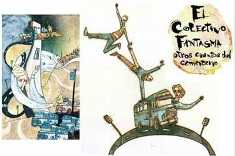
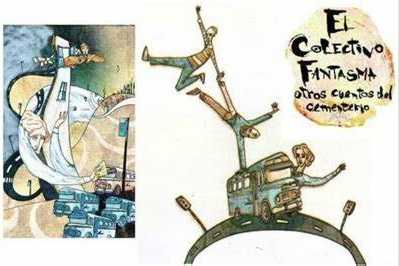
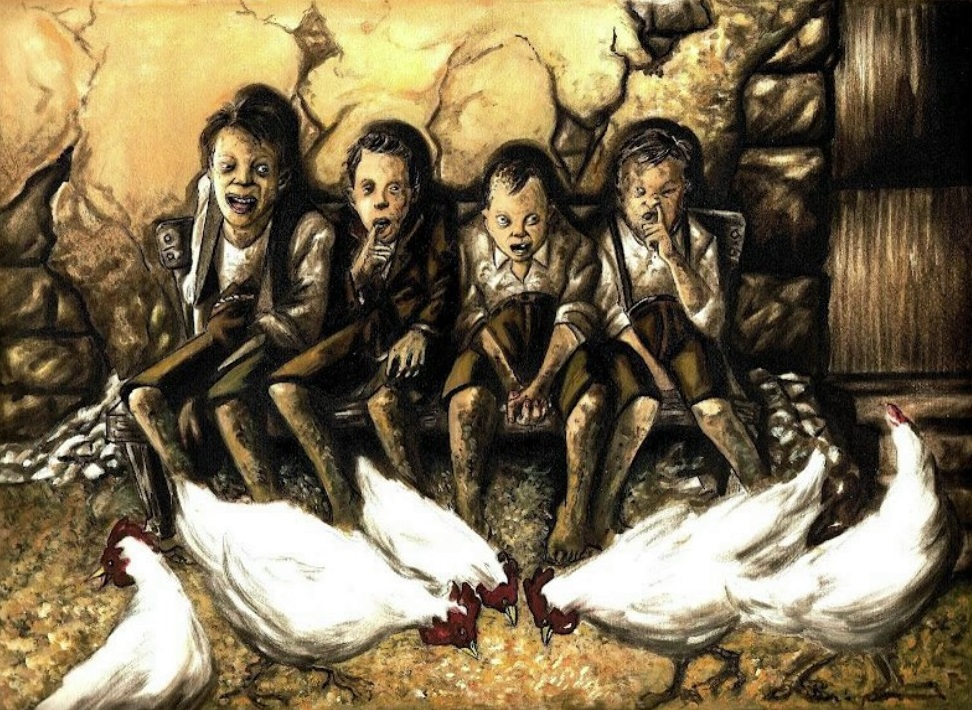
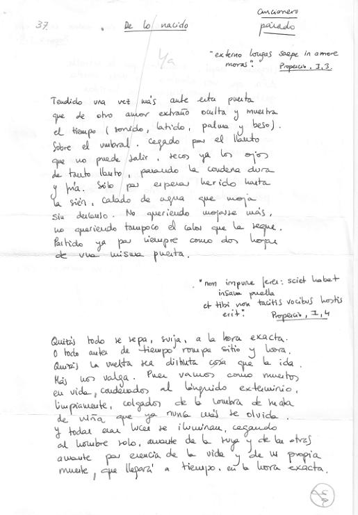
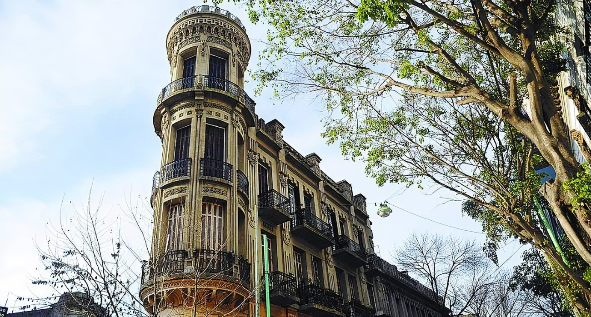

Audiolibros
Los textos leídos por narradores que escuchamos en clase
Escuchar másAudiolibros
Los textos leídos por narradores que escuchamos en clase
Escuchar másVideos
Los videos de los cuentos, leyendas e historias que trabajamos en las clases
Ver másBorradores
Nuestros primeros borradores de los cuentos de terror que escribimos
Leer másNovelas

Novelas de Sergio Aguirre que trabajaremos
Leer másLeyendas urbanas
Leyendas, historias, mitos y relatos que se cuentan en la Ciudad de Buenos Aires
Leer másReflexión sobre el lenguaje
Análisis y conclusiones sobre gramática, semántica y ortografía
Leer más